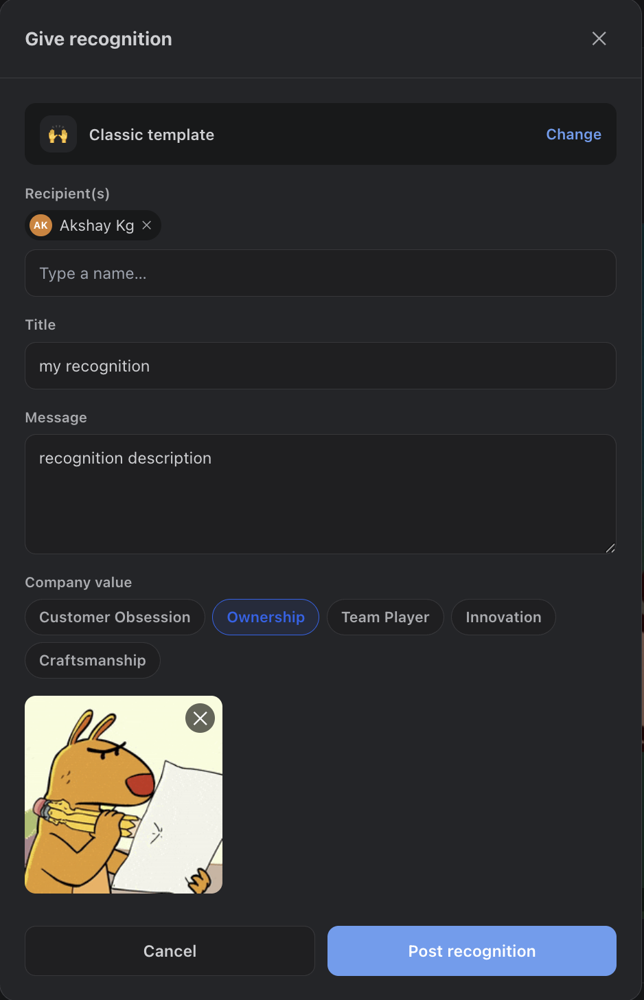
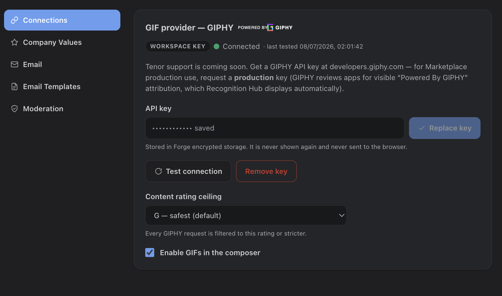

Card Templates
Every recognition starts from a template that shapes how the card renders on the mural: Classic (accent bar), Spotlight (GIF-forward, double width), Milestone (celebratory), Minimal Quote (short shout-outs), and Team Shout (group recognitions, double width).

Recipients
Search any teammate by name (Monday.com) and add up to 20 recipients per recognition. Self-recognition is blocked — recognition is for celebrating others. For multi-recipient posts, everyone is included on one notification email.
Where your data is stored. Recognition Hub keeps its own PostgreSQL database — recognitions, comments, reactions, reward ledgers and cached profiles live there rather than in Monday.com storage, so you choose the provider and region. Privacy & Data Handling has the full picture.
Company Values
Optionally tag the recognition with one of your company's values. The value renders as a colored chip on the card and in the notification email, and can be curated by admins (up to 10 values).
GIFs
GIF search is powered by GIPHY  — the composer offers a searchable picker with trending GIFs and full search. GIFs render full-size on cards and appear as a still frame in notification emails.
— the composer offers a searchable picker with trending GIFs and full search. GIFs render full-size on cards and appear as a still frame in notification emails.
GIFs are off until an admin turns them on. Even with a GIPHY key in place, the GIF picker stays hidden until an admin ticks Enable GIFs in the composer under Settings > Connections. Save a key (or use the built-in one), then flip the toggle — the picker appears in the composer after the next reload.
How the GIPHY integration works
- Enable the toggle first — GIFs ship off. Under Settings > Connections, ensure a key is present (built-in or your own), then turn on Enable GIFs in the composer. The toggle can’t be switched on until a key exists.
- Built-in or workspace key — GIFs can run on the app’s built-in GIPHY key; admins can override it with their own workspace key under Settings > Connections (write-only, stored encrypted, with a test-connection button).
- Content-rating ceiling — admins cap results at G, PG, or PG-13 (the workplace maximum). Every GIPHY request is filtered to that rating or stricter.
- Hotlinked, never re-hosted — GIF media is served straight from GIPHY’s CDN per GIPHY’s terms of service. Nothing is copied or stored by the app; only the GIF URL and attribution metadata are saved.
- Attribution everywhere — the mandatory “Powered by GIPHY” mark is shown in the picker, on card media, and in emails. Admins can disable GIFs entirely at any time.
